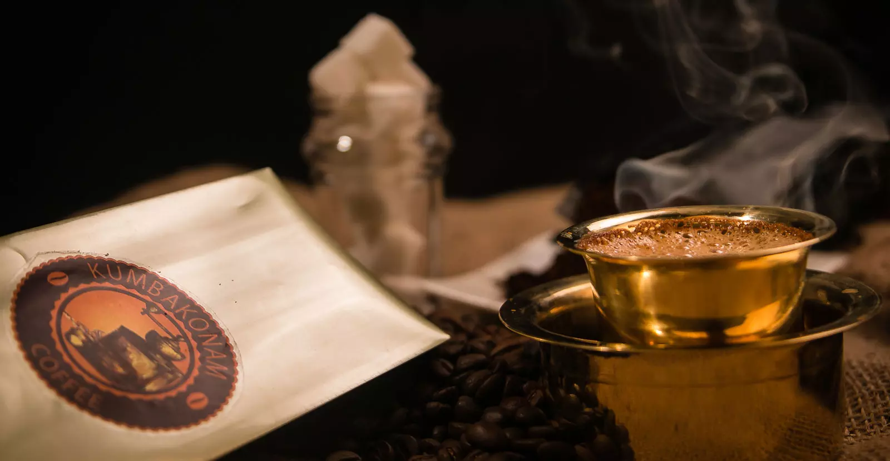

Kumbakonam, located in the Thanjavur district of Tamil Nadu, is a vibrant city renowned for its rich cultural heritage and architectural marvels. It is often referred to as the "Temple Town" due to its numerous temples dedicated to various Hindu deities.
The city is famous for its magnificent Chola temples, showcasing the architectural brilliance of the Chola dynasty. The Brihadeeswarar Temple in nearby Thanjavur, a UNESCO World Heritage site, is a must-visit attraction. The Airavatesvara Temple and the Sarangapani Temple in Kumbakonam are also renowned for their architectural splendor.
Kumbakonam is home to the sacred Mahamaham Tank, where the Mahamaham festival is celebrated once every 12 years. This festival attracts a large number of devotees who gather to take a holy dip in the tank, believing it to cleanse them of their sins. The town comes alive with vibrant processions, rituals, and cultural performances during this auspicious occasion.
Kumbakonam is also renowned for its unique and flavorful filter coffee. The aroma of freshly brewed coffee wafts through the streets, and traditional coffee houses known as "kumbakonam degree coffee" serve this aromatic beverage in a traditional manner. A sip of Kumbakonam coffee is a delightful experience for coffee enthusiasts.
The Adi Kumbeshwara Temple, dedicated to Lord Shiva, is a significant religious site in Kumbakonam. It is believed to be the place where Lord Shiva revealed the secret of the Mahamaham festival to the divine cow Kamadhenu. The temple's architecture and spiritual ambiance attract devotees from far and wide.